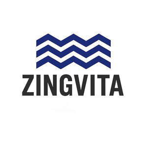

Trade Mark Journal No.2025/024 13 June 2025
UK00004212185 1 June 2025 (5,21,32)

- Class 5
- Electrolyte drinks for medical purposes; Electrolyte solutions for medical use; Electrolyte replacement beverages for medical purposes; Electrolytes for medical use; Mineral water salts; Salts (Mineral water -); Oral rehydration salts; Rehydration preparations; Potassium salts for medical purposes; Sodium salts for medical purposes; Nutritional drink mix for use as a meal replacement; Diuretic preparations; Probiotic bacterial formulations for medical use; Powdered nutritional supplement drink mix; Effervescent vitamin tablets; Vitamin tablets; Powdered fruit-flavored dietary supplement drink mix; Liquid vitamin supplements; Powdered nutritional supplement energy drink mix; Dietary supplements for pets in the nature of a powdered drink mix; Vitamin drinks; Food supplements for sportsmen; Meal replacement powders; Mineral nutritional supplements; Mineral dietary supplements; Nutritional supplements; Vitamin and mineral supplements; Vitamin and mineral food supplements; Liquid nutritional supplements; Dietary and nutritional supplements; Dietary supplements; Dietary food supplements; Vitamin supplements; Nutritional supplement energy bars; Protein supplements; Whey protein dietary supplements; Food supplements; Dietary supplements for animals; Health food supplements made principally of minerals; Herbal supplements; Dietary supplements in powder form; Dietary supplement drinks; Dietary supplements for humans; Dietary supplements for infants; Dietary supplements for pets; Dietary supplement drink mixes; Dietary supplemental drinks; Vitamins and vitamin preparations; Protein supplement shakes.
- Class 21
- Water bottles; Plastic water bottles; Aluminum water bottles; Siphon bottles for carbonated water; Siphon bottles for aerated water; Covers for water bottles; Plastic water bottles [empty]; Aluminum water bottles, empty; Water bottles for bicycles; Empty water bottles for bicycles; Drinking bottles; Water bottles sold empty; Siphons for sparkling water; Bottles; Bottle pourers; Glass bottles; Siphons for carbonated water; Reusable stainless steel water bottles; Water bottles for bicycles, sold empty; Drinking bottles for sports; Insulated bottles [flasks]; Sports bottles [empty].
- Class 32
- Sports drinks containing electrolytes; Isotonic beverages; Non-alcoholic drinks enriched with vitamins and mineral salts; Mineral water [beverages]; Isotonic drinks; Isotonic non-alcoholic drinks; Powders used in the preparation of coconut water drinks; Tonic water [non-medicated beverages]; Isotonic beverages [not for medical purposes]; Powders used in the preparation of fruit-based drinks; Powders used in the preparation of fruit-based beverages; Aloe juice beverages; Drinking water with vitamins; Tonic water; Coconut water as a beverage; Bottled water; Water; Bottled drinking water; Soda water; Drinking water; Distilled drinking water; Drinking mineral water; Sparkling water; Carbonated water; Drinking spring water; Flavored mineral water; Powders for effervescing beverages; Flavoured carbonated beverages; Aerated water [soda water]; Seltzer water; Water (Seltzer -); Energy drinks; Non-alcoholic drinks; Sports drinks; Protein-enriched sports beverages; Carbonated non-alcoholic drinks; Fruit-flavored soft drinks; Non-alcoholic beverages; Beverages (Non-alcoholic -); Fruit-flavored beverages; Powders for the preparation of beverages.
Zing Global ltd